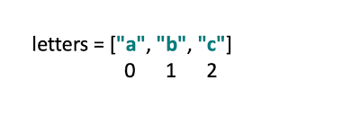
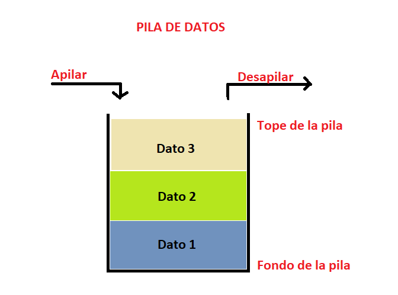
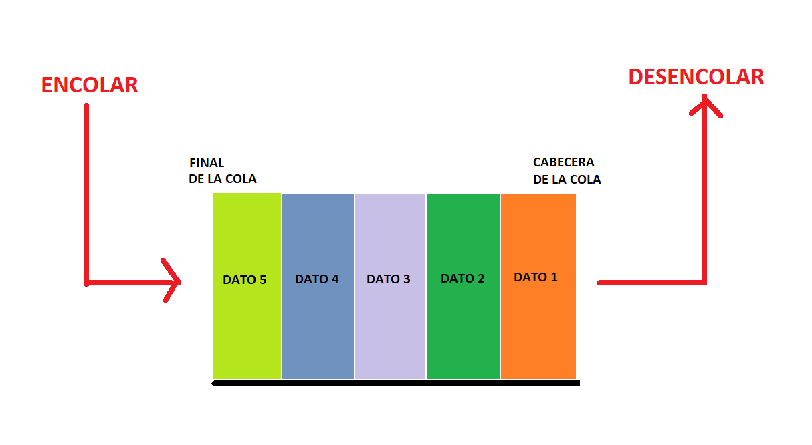
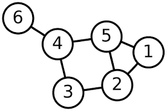

Que es estructura de datos
Las estructuras de datos en programación son un modo de representar información en una computadora, aunque además, cuentan con un comportamiento interno. ¿Qué significa? Que se rige por determinadas reglas/restricciones que han sido dadas por la forma en que está construida internamente. ¿Por qué es importante conocerlas? Cuando inicias en el mundo de la programación y te metes de lleno en el mundo de JavaScript, las estructuras de datos son fundamentales. Conocer sobre listas, árboles y grafos te permitirá organizar mejor la información y crear código más eficiente. Además, es clave para mejorar tus habilidades técnicas y enfrentarte con éxito a cada challenge en tus futuras entrevistas laborales.
Cuales son los tipos de datos que existen
Las estructuras de datos estáticas son aquellas en las que el tamaño ocupado en memoria se define antes de que el programa se ejecute y no puede modificarse dicho tamaño durante la ejecución del programa, mientras que una estructura de datos dinámica es aquella en la que el tamaño ocupado en memoria puede modificarse durante la ejecución del programa. Cada tipo de estructura dependerá del tipo de aplicación que se requiera.
Estructura de datos estaticas
-
Arrays
Un array es un tipo de dato estructurado que permite almacenar un conjunto de datos homogéneo y ordenado, es decir, todos ellos del mismo tipo y relacionados. Su condición de homogéneo, indica que sus elementos están compuestos por el mismo tipo de dato, y su condición de ordenado hace que se pueda identificar del primer al último elemento que lo compone.

Estructura de datos dinamicas
Por otro lado, vimos que en programación existen estructuras de datos dinámicas, es decir, una colección de elementos -nodos- que normalmente se utilizan para dejar asentados registros. A diferencia de un array que contiene espacio para almacenar un número fijo de elementos, una estructura dinámica de datos se amplía y contrae durante la ejecución del programa. Veamos algunos casos:
-
lineales
Las estructuras de datos lineales son aquellas en las que los elementos ocupan lugares sucesivos en la estructura y cada uno de ellos tiene un único sucesor y un único predecesor, es decir, sus elementos están ubicados uno al lado del otro relacionados en forma lineal.
Hay tres tipos de estructuras de datos lineales:
-
Listas
Se construyen con elementos que están ubicados en una secuencia. Aquí, cada elemento se conecta con el siguiente a través de un enlace que contiene la posición del siguiente elemento. De este modo, teniendo la referencia del principio de la lista podemos acceder a todos los elementos de la misma.
 -
Pilas
La pila es un tipo especial de lista lineal dentro de las estructuras de datos dinámicas que permite almacenar y recuperar datos, siendo el modo de acceso a sus elementos de tipo LIFO (del inglés Last In, First Out, es decir, último en entrar, primero en salir). ¿Cómo funciona? A través de dos operaciones básicas: apilar (push), que coloca un objeto en la pila, y su operación inversa, desapilar (pop), que retira el último elemento apilado.
 -
Colas
es un tipo de dato abstracto, caracterizada por ser una secuencia de elementos en la que la operación de inserción push se realiza por un extremo y la operación de extracción pull por el otro. También se le llama estructura FIFO, debido a que el primer elemento en entrar será también el primero en salir.

-
-
No lineales
Las estructuras de datos no lineales, también llamadas multienlazadas, son aquellas en las que cada elemento puede estar enlazado a cualquier otro componente. Es decir, cada elemento puede tener varios sucesores o varios predecesores.
Existen dos tipos:
-
Arboles
los árboles consisten en una estructura no lineal que se utiliza para representar datos con una relación jerárquica en la que cada elemento tiene un único antecesor y puede tener varios sucesores. Los mismos se encuentran clasificados en: árbol general, un árbol donde cada elemento puede tener un número ilimitado de sub árboles y árboles binarios, que son una estructura de datos homogénea, dinámica y no lineal en donde a cada elemento le pueden seguir como máximo dos nodos.

-
Grafos
Se trata de una estructura matemática formada por un conjunto de puntos —una estructura de datos— y un conjunto de líneas, cada una de las cuales une un punto a otro. Los puntos se llaman nodos o vértices del grafo y las líneas se llaman aristas o arcos.

-